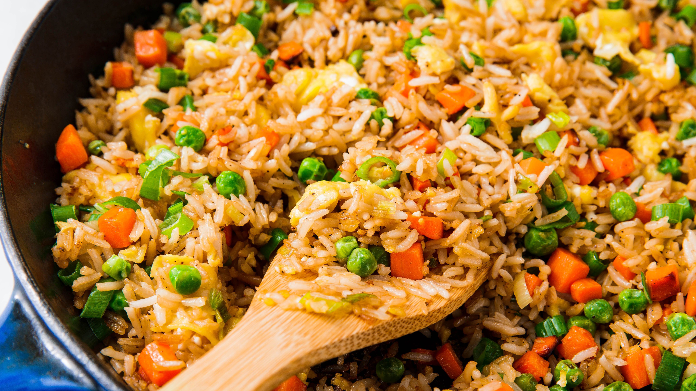

Fried Rice

Description
This simple but delicious fried rice will make your taste buds love you. It's filling, good for you, and homemade.
Similar to the banana bread recipe, this dish won't take long at all. It is a great dish to make if you have leftover rice, veggies, etc. A great lunch!
Ingredients
- 2 cups cooked rice
- 2 tablespoons vegetable oil OR 1 tablespoon butter, salted or unsalted
- 1 finely chopped carrot
- 1/2 cup frozen peas
- 1/2 cup water
- 2 tablespoons soy sauce
- 1 or 2 large eggs, beaten
- 1 clove garlic
Steps
- In a large saucepan, pour the oil or butter into the pan. Set the heat to medium-high.
- Once the butter or oil is heated, pour in the egg. Scramble. Set aside the scrambled egg.
- Pour the veggies into the pan. Set the heat to medium-low. Stir fry until cooked.
- Once the veggies are cooked, pour in the rice and eggs. Mix.
- In a separate bowl or cup, mix the water and soy sauce together. Pour the solution into the rice and fry.
- Serve out and you're done!